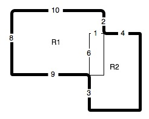

Computing Area
Learning to program in Python is like learning to use your calculator. In fact Python programming and using your calculator are quite similar. Python can be used to compute with numbers. Numbers like 3.0 are called floating point or real numbers in Python. Numbers like 3 are called integers in Python. Real numbers include a decimal point and integer numbers do not.
In this first problem we'll use Python to solve a problem involving multiplication and subtraction.
Computing the area of shapes constructed of overlapping regular polygons.
Consider the shape shown here. In the figure all angles are right angles and all distances are in meters. Our job is to figure out the area in square meters. The lighter lines in the middle help us figure out how to compute the area. We can compute the area of the two rectangles and then subtract one of the overlapping parts since otherwise the overlapping part would be counted twice.